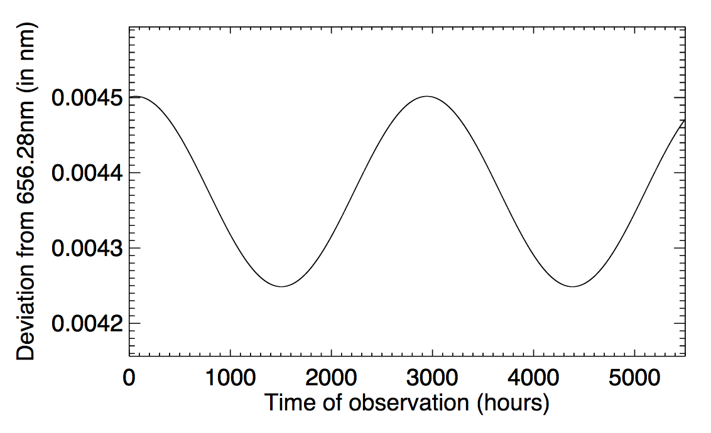

Forrige side🙂 🙁Radiell-hastighetsmetoden
Du får ikke helt svaret enda. Her kommer litt mer info:

Her ser vi bølgelengden til absorpsjonslinja Hα, en typisk linje for hydrogenatomet, målt fra en stjerne. I laboratoriet så måler man bølgelengden til Hα til å være 656.28nm. Men i spektret fra denne stjernen så endrer bølgelengden for spektrallinjen seg frem og tilbake slik som vi så på forrige side slik at den ikke er på nøyktig 656.28nm som i laboratoriet. X-aksen i figuren viser tidspunktet for observasjon, y-aksen viser avviket i bølgelengde fra 656.28nm. Vi ser at den er veldig nær 656.28nm, men ikke helt på, den har små avvik frem og tilbake som følger en sinus-kurve. Hjelper dette deg med å forstå hvorfor denne stjerna kan ha en planet i bane rundt seg? Tenk deg nøye om før du går til neste side! Hint: Hva kan få bølgelengden til lys til å endre seg? Neste side